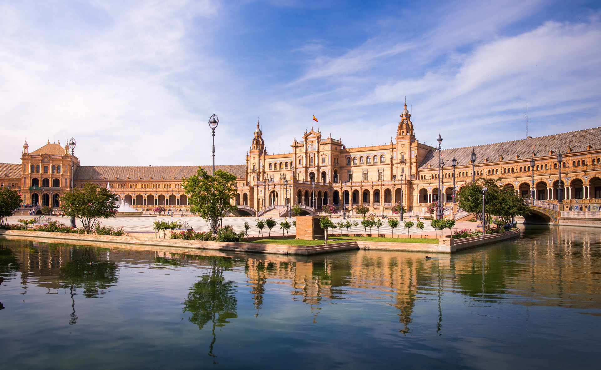
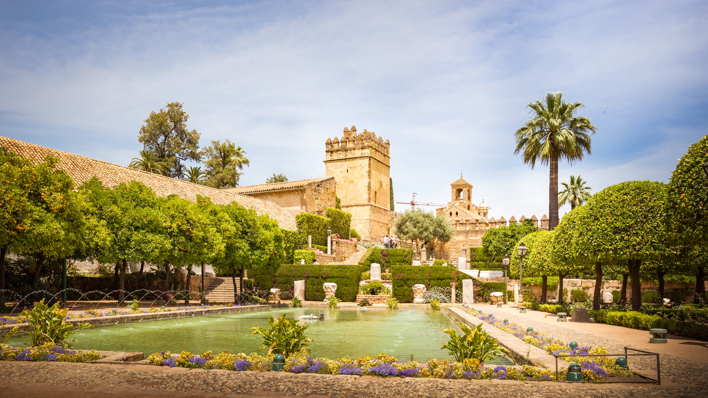
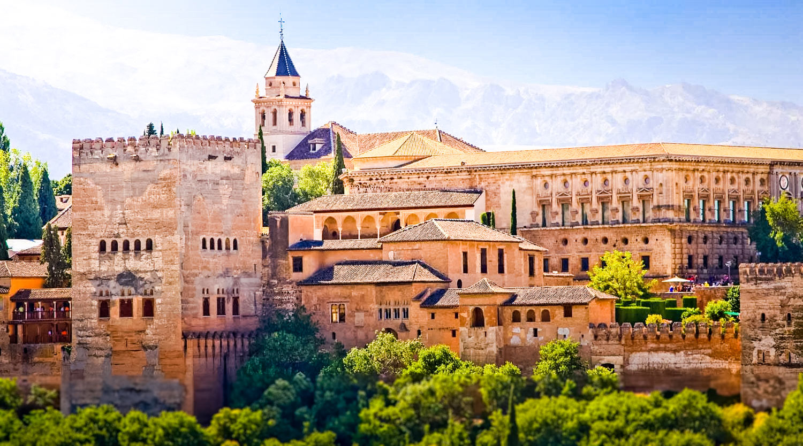
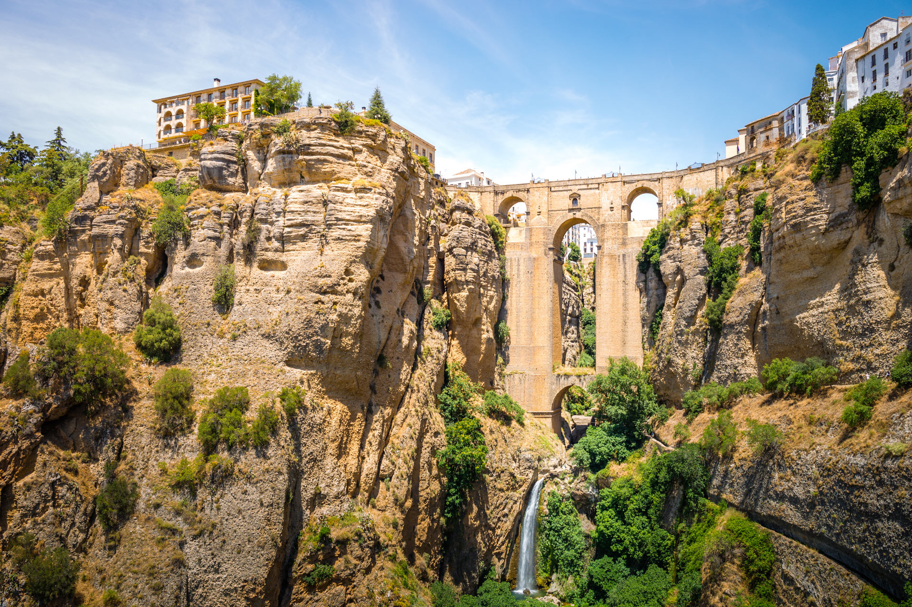
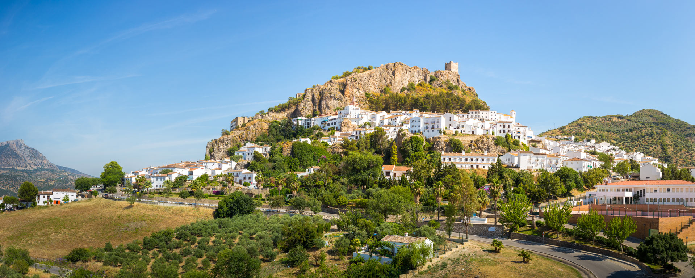

LES LIEUX INCONTOURNABLES POUR VISITER L'ANDALOUSIE
Visiter l’Andalousie, dans le sud de l’Espagne, c’est découvrir une région très riche d’un point de vue culturel et historique.
Des villes de Séville, Cordoue ou Grenade en passant par la route des villages blancs ou Jerez de la Frontera, vous trouverez sans problème de quoi visiter en Andalousie.Alors, quels sont les lieux d’intérêts incontournables? Où aller et que faire en Andalousie?
Séville, capitale de l'Andalousie
Séville, capitale de l'Andalousie, fourmille de lieux historiques à l'architecture
typiquement andalouse : La Casa de Pilatos et l'Alcázar, magnifiques palais sévillans,
en sont de parfaits exemples. La promenade idéale passe dans les rues colorées du quartier
de Santa Cruz, par les berges du Guadalquivir, pour se diriger vers la superbe Place
d'Espagne. Séville propose également de nombreux jardins plus beaux les uns que les
autres : celui de l'Alcázar, mais aussi le Parque de María Luisa.

Cadix, l'ancienne
Cadix est non seulement l'un des plus grands ports espagnols, mais elle est surtout la
plus ancienne ville d'Espagne. Son accueil chaleureux, ses jolis patios et ses plages de
sable fin en font une destination idéale pour se détendre. Après quelques tapas en bord de
mer, les visites du Château de San Esteban, du Théâtre romain ou de la Cathédrale de Cádiz,
dévoilent la richesse culturelle et architecturale de la ville.

Málaga, capitale de la Costa del Sol
Capitale de la Costa del Sol, Málaga recèle de nombreux musées, dont le musée Picasso
avec une collection permanente de 285 œuvres du peintre. On compte parmi ses monuments la
Cathédrale de Málaga, la résidence royale Alcazaba et le Théâtre romain à ses pieds, ainsi
que le château de Gibralfaro. Pour se détendre, le jardin botanique de La Concepción,
considéré comme l'un des plus beaux d'Espagne, regorge de plantes tropicales et subtropicales.
Mais c'est aussi une ville animée et joyeuse où il est facile de sortir pour goûter au fameux
de vin de Málaga en dégustant quelques tapas.

Cordoue, la belle andalouse
Cordoue est appelée la belle andalouse, et ce surnom est largement mérité. Elle est une
ville de mixité culturelle et religieuse : on peut y admirer la mosquée-cathédrale la
Mezquita et la Cathédrale de Cordoue, ou se balader dans la Juderia, le quartier juif aux
patios lumineux. Son centre historique est d'ailleurs classé au Patrimoine mondial culturel
depuis 1984. Après avoir visité le musée archéologique et ses vestiges d'un théâtre romain,
les berges du Guadalquivir sont l'endroit idéal pour admirer le coucher de soleil.

Grenade et son Alhambra
Parmi les villes d’Andalousie les plus visitées, on retrouve également Grenade, connue
notamment pour l’Alhambra. Cet incroyable monument classé au Patrimoine Mondial de l’Unesco
est le plus beau témoin de l’architecture mudéjar au monde. Il réserve bien des surprises
parmi ses palais, ses bassins, et ses nombreuses pièces à découvrir. Ne manquez pas de
réserver cette visite à l’avance.
Situé un peu à l’est de Séville sur la carte de
l’Andalousie, Grenade possède nombre d’atouts propres à ces villes du sud de l’Espagne: des
façades aux couleurs chaudes, la chaleur humaine de ses habitants, et ses merveilles
gastronomiques. Vous balader au cœur de la ville sera un vrai plaisir, le temps d’une
journée ou deux.

Nous vous invitons à regarder ces images pour vous permettre d'avoir une aperçu de la ville.